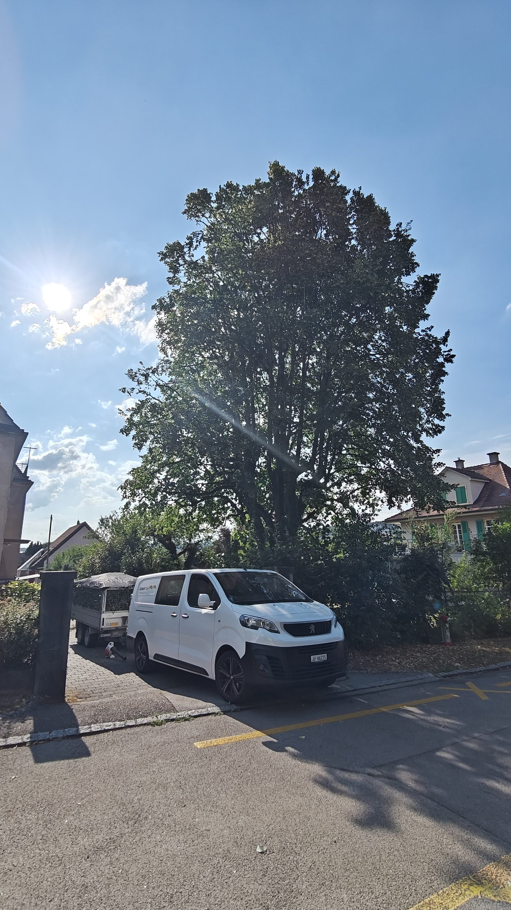
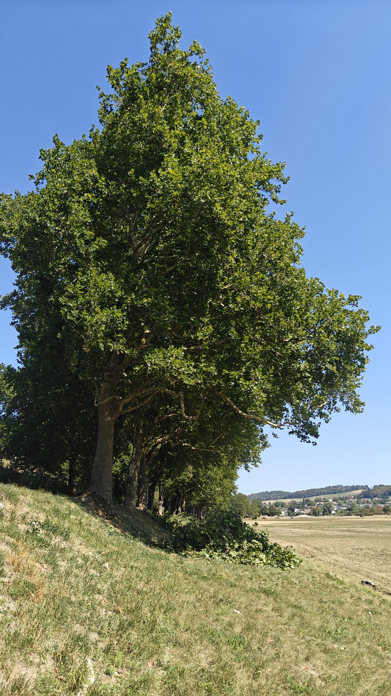

Ihr Baumkletterer für alle Baumarbeiten
Schnitt, Pflege, Fällung, Abtragen, Diagnose, Pflanzung: Arboritaille kümmert sich um Ihre Bäume mit Seilklettertechnik, den passenden Mitteln für jede Situation und Respekt vor dem Lebendigen. Für Privatpersonen, Unternehmen und Gemeinden.
Wir kommunizieren gerne auf Deutsch per E-Mail und Kontaktformular. Telefonisch beraten wir Sie auf Französisch.
- Gratis Offerte, unverbindlich
- Antwort innert 48 Arbeitsstunden
- Eine Ansprechperson, von der Beratung bis zur Ausführung
- Sauberer Arbeitsplatz, Äste abtransportiert
Ihre gratis Offerte
Sagen Sie uns, was Ihr Baum braucht. Wir melden uns schriftlich, um einen Besichtigungstermin zu vereinbaren.
Alles, was ein Baum braucht, von der Pflanzung bis zur Fällung
Eine Fachperson für das ganze Leben Ihrer Bäume. Wir empfehlen Ihnen den richtigen Eingriff zum richtigen Zeitpunkt.
Baumschnitt und Baumpflege
Pflegeschnitt, Kroneneinkürzung oder Kronenaufastung, Totholzentfernung. Ein baumschonender Schnitt, der Form und Gesundheit des Baums respektiert. Mehr erfahren
Fällung und Abtragen
Klassische Fällung, Abtragen am Seil oder mit Abseiltechnik auf engem Raum, Kranhub. Auch nahe an Gebäuden. Mehr erfahren
Diagnose und Gutachten
Beurteilung von Vitalität, mechanischen Schwachstellen und Krankheiten. Eine klare Einschätzung als Entscheidungsgrundlage: erhalten, pflegen oder fällen.
Pflanzung
Wahl der zum Standort passenden Baumart, fachgerechte Pflanzung und Dreibock-Pfahlung für ein gutes Anwachsen.
Kronensicherung
Sicherung einer schwachen Zwiesel oder eines Starkastes mit dynamischer oder statischer Kronensicherung, um den Baum sicher zu erhalten.
Stockfräsen
Entfernen von Wurzelstöcken unter das Bodenniveau, um ohne Hindernis neu zu pflanzen, Rasen anzusäen oder zu bauen.
Privatpersonen, Unternehmen, Gemeinden: dieselbe Sorgfalt, angepasst an Ihre Anliegen
Ob Sie einen Baum im Garten oder einen ganzen Baumbestand zu betreuen haben, das Bedürfnis ist dasselbe: eine Fachperson, die Sie nach Ihrer Situation berät.
Privatpersonen
Pflege Ihrer Gartenbäume, Sicherung, Fällung eines störenden Baums. Gratis Offerte und individuelle Beratung.
Unternehmen
Ein Baum behindert Ihre Baustelle oder braucht Pflege? Wir beurteilen rasch und handeln so bald wie möglich.
Gemeinden
Betreuung von Baumgruppen, Umgang mit gefährlichen Bäumen, Pflanzprojekte. Ein Partner für die kommunale Baumpflege.
Liegenschaftsverwaltungen
Regelmässige Pflege des Baumbestands Ihrer Liegenschaften, mit einer Ansprechperson und klaren Offerten.

Leidenschaft für den Beruf, Respekt vor dem Lebendigen
Jeder Baum ist ein Einzelfall. Bevor wir eingreifen, nehmen wir uns Zeit, ihn zu verstehen: seine Art, seine Vitalität, sein Umfeld und Ihre Erwartungen.
- Individuelle BeratungDas Ziel ist, Bäume zu verschönern und zu erhalten. Jede Situation ist anders, manchmal ist eine Fällung nötig. Wir sind da, um Sie zu beraten.
- Die passenden Mittel für jeden BaumStandardmässig Seilklettertechnik, um Ihren Garten zu schonen. Hebebühne, Kran oder andere Maschinen, wenn es die Situation verlangt, in Ausnahmefällen Helikopter.
- Saubere, überlegte SchnitteBaumschonender Schnitt und Respekt vor der Physiologie des Baums für ein dauerhaftes Ergebnis.
- Sauber hinterlassener ArbeitsplatzÄste gehäckselt oder abtransportiert, Holz auf Wunsch zugeschnitten, Gelände gereinigt.
Vier Schritte, vom ersten Kontakt bis zum sauberen Gelände
Sie kontaktieren uns
Über das Formular oder per E-Mail, gerne auf Deutsch. Ein paar Worte zu Ihrem Baum genügen.
Besichtigung und Diagnose
Wir schauen uns den Baum an, hören Ihre Wünsche und empfehlen den richtigen Eingriff.
Klare, kostenlose Offerte
Eine schriftliche, detaillierte Offerte auf Deutsch. Sie entscheiden frei.
Ausführung und Reinigung
Wir arbeiten am vereinbarten Termin und hinterlassen Ihr Gelände sauber.
Unsere Einsätze




Jura, Neuenburg und Bern
Von Courgenay in der Ajoie aus sind wir für Privatpersonen, Unternehmen und Gemeinden in einem grossen Teil der Westschweiz und im Kanton Bern tätig.
Kanton Jura
- Pruntrut (Porrentruy)
- Delsberg (Delémont)
- Courgenay
- Alle
- Bassecourt
- Courrendlin
- Moutier
- Saignelégier
- Le Noirmont
- ganze Ajoie
Kanton Neuenburg
- Neuenburg (Neuchâtel)
- La Chaux-de-Fonds
- Le Locle
- Val-de-Ruz
- Val-de-Travers
- Boudry
- Seeufer
Bern
- Biel/Bienne
- Tavannes
- Saint-Imier
- Tramelan
- Reconvilier
- Neuenstadt (La Neuveville)
Was unsere Kunden uns fragen
Sprechen Sie Deutsch?
Ja, schriftlich. Wir beantworten Ihre Anfragen gerne auf Deutsch per E-Mail und Kontaktformular, und die Offerte erhalten Sie ebenfalls auf Deutsch. Telefonisch beraten wir Sie auf Französisch. Am einfachsten beschreiben Sie uns Ihren Baum über das Formular, wir melden uns schriftlich zurück.
Woran erkenne ich, dass mein Baum einen Eingriff braucht?
Totholz in der Krone, Äste, die ein Dach berühren, Pilze am Stammfuss, ein geneigter oder gerissener Stamm, schütteres Laub: Zeichen, die man nicht ignorieren sollte. Eine kostenlose Besichtigung schafft Klarheit.
Was kosten Ihre Leistungen?
Jeder Baum ist anders: Höhe, Art, Zugang, Art des Eingriffs und Holzabtransport beeinflussen den Preis. Deshalb kommen wir kostenlos vorbei, um eine schriftliche, genaue Offerte zu erstellen.
Braucht es eine Bewilligung, um einen Baum zu schneiden oder zu fällen?
Ein Pflegeschnitt erfordert in der Regel keine Schritte. Eine Fällung oder ein Eingriff an einem geschützten Baum kann eine Bewilligung der Gemeinde erfordern. Wir begleiten Sie beim Vorgehen.
Mein Baum ist schwer zugänglich. Ist das ein Problem?
Nein. Wir arbeiten in Seilklettertechnik, womit wir eingezäunte Gärten, Hanglagen und Innenhöfe erreichen. Wenn nötig, setzen wir eine Hebebühne, einen Kran oder andere Maschinen ein, in sehr besonderen Fällen einen Helikopter.
In welchem Gebiet sind Sie tätig?
Im ganzen Kanton Jura, im Kanton Neuenburg und in Bern.
Arbeiten Sie mit Unternehmen und Gemeinden?
Ja. Wir unterstützen Unternehmen auf ihren Baustellen und Gemeinden bei der Betreuung ihres Baumbestands: Kontrolle, Sicherheit, Pflanzungen.

Zweifel an einem Baum? Holen Sie die Meinung einer Fachperson ein.
Besichtigung und Offerte gratis und unverbindlich. Wir antworten Ihnen auf Deutsch innert 48 Arbeitsstunden.